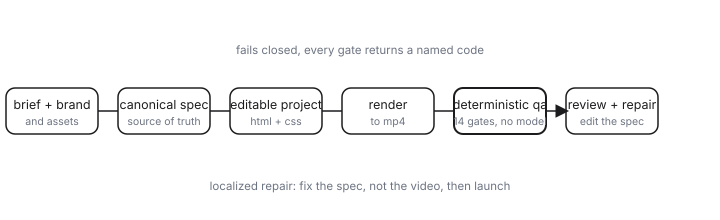
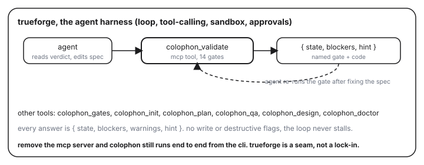

an agent can write a video plan in seconds. what it still cannot tell you is whether that plan will look good. that gap is the whole job, and for a launch video it is the difference between shipping and embarrassment.
we built colophon to close that gap without pretending a model can judge taste. the trick is to stop asking is this good? and start asking does this spec violate a rule we can name? colophon enforces a closed motion vocabulary and runs fourteen deterministic gates that make zero model calls. it runs inside trueforge as an mcp tool server, so an agent can use it without us ever trusting the model to be the critic.
the failure mode is always the same. the agent produces a 90-second render. someone watches it and says
it feels cheap, but cannot say why. the defects are real and mechanical: a scene that is
0.2s long, text that overflows its box, a colour that is not the brand colour, a claim with
no source behind it. none of these are a matter of opinion. all of them are checkable by a computer.
| without colophon | with colophon |
|---|---|
| agent ships the render unchecked | agent must clear 14 named gates first |
| does it look good? becomes a model guess | gate returns a code and a fix, not a vibe |
| defect found by a human after publish | defect located and blocked before launch |
| taste is a feeling re-litigated every render | taste is a parameter, set once |
one constraint explains almost everything we built: you cannot lint a pixel, but you can lint a
spec. so we never let the agent author from nothing. we give it a closed motion vocabulary,
a finite set of moves, each with explicit parameters. once motion is a number (400ms,
60ms stagger, scale 1.05), taste becomes a parameter you can set, version, and
enforce. a verdict becomes located instead of interpreted: the pulse feels cheap maps
onto one of three dials, vocabulary, parameters, or precondition, and a single edit makes it true for
every future video.

colophon is an instrument, not an employee. it reports what is wrong with a spec; it does not decide what to do about it. trueforge is the environment the agent works inside, the loop, the tool calling, the sandbox, the approvals. so colophon runs inside trueforge as an mcp tool server, and the agent does the actual work of reading a report and acting on it.
the crucial difference from a wrapper: the agent is not asking a model is this video good? on boundary defects that is close to a coin flip. it calls a deterministic instrument, reads a precise answer that names the gate and the failure code, and acts. trueforge supplies the loop; colophon supplies the ground truth.

in a trueforge session the agent calls colophon_validate and gets back a precise, named
verdict, never a vague opinion. here is a real shape of the answer:
{
"gate": "spec.timing.min_scene_ms",
"state": "blocked",
"blockers": ["scene 'hook' is 0.2s (< 400ms minimum)"],
"warnings": [],
"hint": "A scene this short reads as a flash; raise to >=400ms or merge into the next scene."
}
the agent reads the blocker, edits the spec, and re-runs the gate. when the named defect is gone, the gate
returns ready. that is the entire interaction: a loop of name the failure, fix the cause,
re-check, with no human in the middle guessing.
a wrapper puts the model in charge and treats the checker as a suggestion. we did the opposite. when a spec
is not ready, a gate says blocked with a specific code, and the agent's only move is to fix the
underlying cause. this is also why the system is demoable with zero api keys: trueforge runs
standalone, and colophon's gates make no model calls at all. the ground truth is free; only the agent that
acts on it needs a model.
three rules keep the system trustworthy. each has a named failure mode and a fix.
colophon review extracts frames a human
signs off on. failure: shipping on the instrument's word alone. fix: require a human verdict
on the contact sheet before launch.{ state, blockers, warnings, hint }.colophon design). headless, no agent, no api key: it
localizes a failure to one of three dials and applies a targeted spec edit, then re-runs. fails closed.delivery-report.json, so a result replays instead of being admired.tests/test_docs.py
fails the build if the prose drifts from the code.colophon deliver runs end-to-end from the cli.# serve colophon's gates as mcp tools
colophon mcp serve --host 127.0.0.1 --port 8000
# in another terminal, start the harness (no signup, local sandbox)
npx @truefoundry/trueforge@latest # listens on :8790
# or run the whole pipeline headlessly, no agent, no key
python3 -m colophon.cli deliver runs/cadence-01 --reviewin trueforge: settings, mcp servers, add. type remote, url
http://127.0.0.1:8000/mcp. then watch the agent call colophon_validate, hit a
named blocker, edit the spec, and re-run until it is ready.
the roadmap is to keep converting taste into checkable parameters: additional closed vocabularies for new artifact types, and gates that localize feels cheap to a precise, fixable dial. the human taste call stays human; colophon's job is to make it the only thing left to argue about.